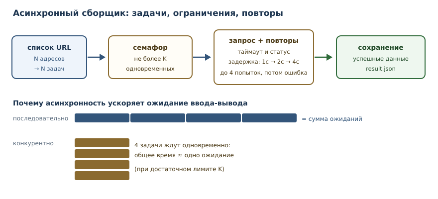
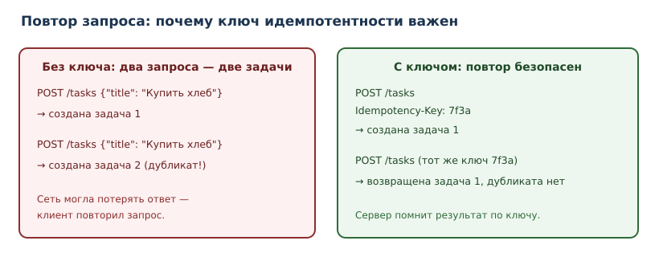

Проект: асинхронный сборщик данных
Полный проект: конкурентные запросы с лимитом, повторы с задержкой, сохранение данных и наблюдаемость.
В этой главе
Последний проект — о программах, которые большую часть времени ждут. Сетевой запрос, ответ базы, чтение файла: процессор простаивает, пока данные идут по сети. Асинхронный код позволяет одному потоку обслуживать сотни ожиданий одновременно. Но вместе с возможностями приходят новые способы сломаться: перегрузка чужого сервиса, бесконечные повторы, «зависшие» задачи, потерянные ошибки.
Мы построим сборщик данных: он принимает список адресов, конкурентно загружает их, повторяет неудачные запросы с задержкой, сохраняет результат и оставляет след для диагностики.
48.1 Зачем этот проект
Асинхронность — не «более быстрый Python», а инструмент для задач, где узкое место — ожидание ввода-вывода. Три инженерных навыка из этого проекта применяются в любой системе, работающей с внешними сервисами:
- Ограничение параллелизма. Слишком много одновременных запросов — это отказ в обслуживании чужого сервиса и ваших сокетов.
- Повторы с задержкой. Сбой сети — норма, а не исключение; повтор должен быть обоснованным и ограниченным.
- Наблюдаемость. Без логов и метрик невозможно понять, почему сборщик вернул 47 записей вместо 50.
48.2 Что должно получиться
- вход: файл
urls.txtсо списком адресов; - выход:
result.json— успешно загруженные записи;errors.json— неудачи; - ограничение: не более
Kодновременных запросов (например,K = 5); - повторы: при сетевых ошибках и ответах
429,5xx— до 4 попыток с задержками1, 2, 4секунды; - таймаут на запрос — обязателен;
- каждая неудача фиксируется с адресом и причиной;
- итоговый отчёт: сколько успешно, сколько ошибок, сколько повторов.
48.3 Асинхронный клиент
Асинхронный клиент — HTTP-клиент, который не блокирует цикл событий: пока
один запрос ждёт ответа, другие выполняются. В промышленном коде используют
httpx или aiohttp; в примерах этой главы сеть заменена управляемой
имитацией, потому что песочница книги запрещает сетевые вызовы.
import httpx
RETRYABLE_STATUSES = {429, 500, 502, 503, 504}
class TransientError(Exception):
"""Ошибка, которую имеет смысл повторить."""
class HttpClient:
def __init__(self, timeout: float = 10.0, limit: int = 5) -> None:
self._client = httpx.AsyncClient(
timeout=httpx.Timeout(timeout),
limits=httpx.Limits(max_connections=limit),
headers={"User-Agent": "syllanix-collector/1.0"},
)
async def get_json(self, url: str) -> dict:
try:
response = await self._client.get(url)
except (httpx.TimeoutException, httpx.TransportError) as exc:
raise TransientError(f"сетевая ошибка: {url}") from exc
if response.status_code in RETRYABLE_STATUSES:
raise TransientError(f"статус {response.status_code}: {url}")
if response.status_code >= 400:
raise httpx.HTTPStatusError(
f"статус {response.status_code}",
request=response.request,
response=response,
)
return response.json()
async def close(self) -> None:
await self._client.aclose()
Две детали важны: таймаут (иначе задача может ждать вечно) и лимит соединений (иначе клиент откроет сотни сокетов). Оба параметра — часть контракта надёжности, а не «настройки на потом».
Клиент классифицирует ошибки у границы: таймауты, обрывы соединения и ответы
429/5xx он превращает в TransientError, а остальные 4xx — в
httpx.HTTPStatusError. Благодаря этому политике повторов достаточно ловить
один тип, и она не зависит от деталей httpx.
48.4 Ограничение параллелизма
Ограничение параллелизма реализуется семафором: счётчиком, который
пропускает не более K задач одновременно.
import asyncio
async def collect_limited(count: int, limit: int) -> tuple[list[int], int]:
semaphore = asyncio.Semaphore(limit)
active = 0
peak = 0
async def job(number: int) -> int:
nonlocal active, peak
async with semaphore:
active += 1
peak = max(peak, active)
await asyncio.sleep(0.01) # имитация сетевого ожидания
active -= 1
return number
results = await asyncio.gather(*(job(i) for i in range(count)))
return list(results), peak
results, peak = asyncio.run(collect_limited(count=9, limit=3))
print("обработано:", len(results))
print("пик одновременно:", peak)
обработано: 9
пик одновременно: 3
Семафор не ускоряет саму работу, он ограничивает её. Это осознанный компромисс: мы жертвуем максимальной скоростью ради предсказуемой нагрузки на внешний сервис и собственные ресурсы.
Ограничение частоты (rate limiting) — другое ограничение: сколько запросов
отправляется в единицу времени. Семафор его не обеспечивает: при быстрых
ответах K одновременных задач успевают отправить сотни запросов в секунду.
Если сервис задаёт квоту, нужен отдельный ограничитель — пауза между запусками
или token bucket. В этом проекте мы ограничиваем параллелизм, а частоту
оговариваем отдельно, чтобы не путать два разных механизма.

48.5 Политика повторов
Политика повторов отвечает на три вопроса: что повторять, сколько раз и с какой задержкой.
Что повторять:
- сетевые ошибки (таймаут, обрыв соединения);
- ответы
429 Too Many Requests(после задержки); - ответы
5xx.
Что не повторять:
400,401,403,404— повтор не изменит результат, только потратит время и нагрузку.
RETRYABLE_STATUSES = {429, 500, 502, 503, 504}
for status in (200, 400, 401, 404, 429, 500, 503):
verdict = "повторять" if status in RETRYABLE_STATUSES else "не повторять"
print(status, "->", verdict)
200 -> не повторять
400 -> не повторять
401 -> не повторять
404 -> не повторять
429 -> повторять
500 -> повторять
503 -> повторять
Тот же набор статусов использует HttpClient из предыдущего раздела: политика
и клиент не расходятся в том, что считать временным сбоем.
Экспоненциальная задержка (backoff) увеличивает паузу между попытками:
1, 2, 4 секунды. Это снижает нагрузку на сбойную систему и даёт ей время
восстановиться. Полезно добавлять небольшой случайный разброс, чтобы клиенты
не повторяли синхронно («стадо»), но в учебном примере достаточно чистой
экспоненты.
import asyncio
class TransientError(Exception):
pass
async def flaky_fetch(attempt: int) -> str:
if attempt < 3:
raise TransientError(f"временный сбой, попытка {attempt}")
return "данные получены"
async def with_retry(
fetch, attempts: int = 4, base_delay: float = 1.0
) -> tuple[object, int]:
last_error: Exception | None = None
for attempt in range(1, attempts + 1):
try:
return await fetch(attempt), attempt
except TransientError as exc:
last_error = exc
print(f"попытка {attempt}: {exc}")
if attempt < attempts:
delay = base_delay * (2 ** (attempt - 1))
print(f" пауза {delay:.3f} с")
await asyncio.sleep(delay)
raise RuntimeError("все попытки исчерпаны") from last_error
value, used = asyncio.run(with_retry(flaky_fetch, base_delay=0.01))
print(value)
print("попыток:", used)
попытка 1: временный сбой, попытка 1
пауза 0.010 с
попытка 2: временный сбой, попытка 2
пауза 0.020 с
данные получены
попыток: 3
В демонстрации паузы сжаты до миллисекунд, чтобы пример выполнялся быстро; в
собранном проекте base_delay=1.0, то есть паузы 1 и 2 секунды перед второй
и третьей попытками (и 4 — перед четвёртой). with_retry возвращает не только
результат, но и номер успешной попытки: по нему collect считает повторы.
Повтор не должен быть бесконечным: ограничение попыток и общего времени — обязательно. Иначе сбойный сервис получает бесконечный поток запросов, а сборщик никогда не завершается.
48.6 Идемпотентность
Идемпотентность — свойство операции давать тот же результат при повторном
выполнении. GET идемпотентен по определению: чтение не меняет состояние.
С POST сложнее: повторное создание задачи создаст дубликат.

Практические правила:
- для операций, которые можно повторять, используйте идемпотентные методы
(
GET,PUT,DELETE) там, где это уместно; - для создания ресурсов передавайте ключ идемпотентности — уникальный идентификатор запроса; сервер сохраняет результат и при повторе с тем же ключом возвращает его, а не создаёт новую запись;
- в сборщике данных (только чтение) проблема дубликатов не возникает, но правило важно для любого кода, который что-то меняет.
48.7 Наблюдаемость
Наблюдаемость — способность понять состояние системы по её выходам. Минимальный набор для сборщика:
- счётчики: успешно, ошибок, повторов, отброшено;
- логи с полями: адрес, попытка, статус, длительность, идентификатор запуска;
- итоговый отчёт с числами, а не только «готово».
import logging
logger = logging.getLogger("collector")
def log_request(
*, url: str, attempt: int, status: int, duration_ms: float, run_id: str
) -> None:
logger.info(
"запрос завершён",
extra={
"url": url,
"attempt": attempt,
"status": status,
"duration_ms": duration_ms,
"run_id": run_id,
},
)
Структурированные поля позволяют искать «все ошибки по адресу X» и считать статистику без регулярных выражений. Строка «что-то пошло не так» бесполезна: в ней нет ни адреса, ни причины, ни попытки.
48.8 Сборка проекта
Полный цикл в файле collector.py выглядит так:
import argparse
import asyncio
import json
from pathlib import Path
async def collect(urls: list[str], client, limit: int = 5) -> dict:
semaphore = asyncio.Semaphore(limit)
results: list[dict] = []
errors: list[dict] = []
stats = {"ok": 0, "errors": 0, "retries": 0}
async def one(url: str) -> None:
async with semaphore:
try:
data, attempts = await with_retry(
lambda attempt: client.get_json(url), base_delay=1.0
)
stats["retries"] += attempts - 1
results.append({"url": url, "data": data})
stats["ok"] += 1
except Exception as exc: # намеренно широкий перехват на границе
errors.append({"url": url, "error": str(exc)})
stats["errors"] += 1
await asyncio.gather(*(one(url) for url in urls))
return {"results": results, "errors": errors, "stats": stats}
def build_parser() -> argparse.ArgumentParser:
parser = argparse.ArgumentParser(description="Асинхронный сборщик данных")
parser.add_argument("--urls", default="urls.txt", help="файл со списком адресов")
parser.add_argument("--limit", type=int, default=5, help="одновременных запросов")
parser.add_argument("--timeout", type=float, default=10.0, help="таймаут запроса")
return parser
async def main(argv: list[str] | None = None) -> int:
args = build_parser().parse_args(argv)
urls = [
line.strip()
for line in Path(args.urls).read_text(encoding="utf-8").splitlines()
if line.strip()
]
client = HttpClient(timeout=args.timeout, limit=args.limit)
try:
report = await collect(urls, client, limit=args.limit)
finally:
await client.close()
Path("result.json").write_text(
json.dumps(report["results"], ensure_ascii=False, indent=2), encoding="utf-8"
)
Path("errors.json").write_text(
json.dumps(report["errors"], ensure_ascii=False, indent=2), encoding="utf-8"
)
print(report["stats"])
return 0 if not report["errors"] else 1
if __name__ == "__main__":
raise SystemExit(asyncio.run(main()))
Четыре решения, которые стоит заметить:
finallyгарантирует закрытие клиента даже при исключении.- Ошибка одной задачи не останавливает остальные — сборщик продолжает работу и фиксирует неудачу.
- Код возврата отражает наличие ошибок: скрипт можно использовать в CI и мониторинге.
- Счётчик повторов берётся из
with_retry:attempts - 1— это число неудачных попыток перед успехом, поэтомуstats["retries"]не остаётся нулём.
if __name__ == "__main__" превращает main в точку входа: без него запуск
файла только определил бы функции и ничего не сделал. argparse позволяет
запускать сборщик в CI с другим входным файлом и лимитами, не правя код:
python collector.py --urls urls.txt --limit 5 --timeout 10.
48.9 Отмена и таймауты
Асинхронные задачи могут «зависнуть», если внешний сервис не отвечает.
asyncio.timeout ограничивает общее время операции, а отмена задачи
освобождает ресурсы.
async def fetch_with_deadline(url: str, client, seconds: float = 10.0) -> dict:
async with asyncio.timeout(seconds):
return await client.get_json(url)
При отмене внутри задачи может быть занятый ресурс; используйте
try/finally или асинхронные контекстные менеджеры, чтобы освободить его.
Подавление CancelledError без повторного поднятия — ошибка: задача будет
считать себя выполненной, хотя её прервали.
48.10 Тесты
import asyncio
from collector import collect
class FakeClient:
def __init__(self, responses: dict[str, object]) -> None:
self.responses = responses
self.calls: list[str] = []
async def get_json(self, url: str):
self.calls.append(url)
value = self.responses[url]
if isinstance(value, Exception):
raise value
return value
class SlowClient:
def __init__(self, delay: float = 0.01) -> None:
self.delay = delay
self.active = 0
self.peak = 0
async def get_json(self, url: str) -> dict:
self.active += 1
self.peak = max(self.peak, self.active)
try:
await asyncio.sleep(self.delay)
return {"url": url}
finally:
self.active -= 1
def test_collect_records_errors_without_stopping():
client = FakeClient({
"https://a.example": {"id": 1},
"https://b.example": RuntimeError("сбой"),
"https://c.example": {"id": 3},
})
report = asyncio.run(collect(list(client.responses), client))
assert report["stats"]["ok"] == 2
assert report["stats"]["errors"] == 1
assert [error["url"] for error in report["errors"]] == ["https://b.example"]
def test_limit_is_respected_never_exceeded():
client = SlowClient()
urls = [f"https://example.com/{number}" for number in range(12)]
report = asyncio.run(collect(urls, client, limit=3))
assert report["stats"]["ok"] == 12
assert client.peak <= 3
Тест с FakeClient не ходит в сеть: он детерминирован, быстр и проверяет
именно логику обработки ошибок. Тест с SlowClient считает активные задачи и
проверяет, что семафор не пропустил больше K одновременно.
48.11 Типичные ошибки
awaitвнутри цикла без параллелизма.for url in urls: await fetch(url)выполняет запросы последовательно; если хотите конкурентность —gather.- Бесконечные повторы. Ограничивайте попытки и общее время.
- Повтор
4xx. Бессмысленно и вредно. - Отсутствие таймаута. «Зависшая» задача не завершится никогда.
time.sleepвместоasyncio.sleep. Синхронный сон блокирует весь цикл событий, и остальные задачи не могут выполняться.- Неконтролируемое число задач.
gatherна 100 000 адресов создаст 100 000 задач и исчерпает память; используйте лимит и очереди. - Подавление
CancelledError. Задача должна корректно завершаться. - Логи без идентификаторов. Невозможно сопоставить записи одного запуска.
48.12 Упражнения
1. Почему конкурентно быстрее
Объясните, почему 10 запросов по одной секунде последовательно занимают около 10 секунд, а конкурентно — около одной. В каком случае конкурентность не поможет?
2. Семафор
Объясните, что произойдёт, если убрать семафор. Какие риски для внешнего сервиса и для вашей программы?
3. Политика повторов
Составьте таблицу: тип ошибки → повторять или нет → почему. Включите таймаут,
обрыв соединения, 429, 400, 500, 404.
4. Экспоненциальная задержка
Вычислите задержки для 5 попыток при базе 1 секунда. Почему чистую экспоненту часто дополняют случайным разбросом?
5. Таймауты
Где нужно ставить таймаут: на отдельный запрос, на всю задачу, на весь запуск? Приведите аргументы и предложите значения.
6. Отмена задачи
Что произойдёт с открытым соединением, если задачу отменить? Как гарантировать освобождение ресурса?
7. Ошибки не останавливают сбор
Почему ошибка одного адреса не должна останавливать остальные? Как сообщить о частичном успехе вызывающему коду?
8. Наблюдаемость
Предложите набор полей для структурированного лога одного запроса. Какие метрики вы бы собирали для сборщика?
9. Идемпотентность
Почему GET можно повторять без ключа идемпотентности, а POST — нет?
Приведите пример сценария, где повтор POST создаёт проблему.
10. Мини-релиз сборщика
Опишите запуск сборщика в CI: входной файл, лимиты, таймауты, коды возврата, сохранение артефактов, уведомление о частичном успехе. Что должно быть зелёным до публикации?
48.13 Проверка понимания
- Чем конкурентность отличается от параллелизма и почему для сетевых запросов достаточно первой?
- Зачем нужен семафор и что произойдёт без него?
- Какие ошибки имеет смысл повторять и почему?
- Что такое экспоненциальная задержка и какую проблему она решает?
- Почему операция должна быть идемпотентной, если её можно повторить?
- Что делает
asyncio.timeoutи почему таймаут обязателен? - Какие поля должны быть в структурированном логе запроса?
48.14 Что дальше
На этом основной маршрут книги завершён. Вы прошли путь от первого выражения до асинхронного проекта с ограничениями, повторами и наблюдаемостью. Дальше — практика: расширяйте проекты, читайте чужой код, участвуйте в открытых проектах и возвращайтесь к главам как к справочнику. Хороший следующий шаг — взять один из проектов и довести его до состояния, которым не стыдно поделиться: тесты, документация, CI, релиз.